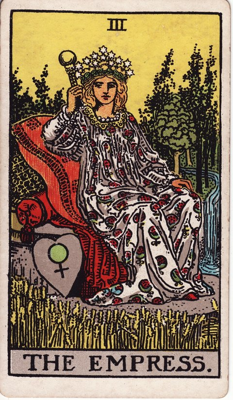

메이저 아르카나 · 타로 카드 백과사전
여황제 (The Empress)

정방향
키워드: 풍요로운 결실 · 따뜻한 돌봄 · 창조적 활력 · 천천히 무르익는 정성 · 감각의 만개 · 품어주는 여유
조언: 정성 들여 돌봐온 것들이 결실을 맺도록 스스로를 잘 돌보는 시간을 가지세요.
연애운
솔로
편안하고 따뜻한 매력이 빛을 발하며 좋은 인연이 자연스럽게 다가오는 시기입니다. 애써 꾸미지 않아도 편안한 모습 그대로 매력이 전해질 수 있어요.
커플
애정이 풍성하게 오가며 관계가 편안하고 안정적으로 무르익는 시기입니다. 서로를 세심하게 챙기는 마음이 관계를 더욱 단단하게 만들어줍니다.
재물운
소비
여유로운 마음으로 스스로를 위한 소비를 즐기기 좋은 시기입니다. 다만 넘치지 않게 조절하세요.
투자
꾸준히 쌓아온 것이 결실을 맺어 안정적인 수익으로 돌아오는 시기입니다. 조급하게 굴지 않아도 시간이 지나면 자연스럽게 열매를 맺습니다.
취업운
구직
따뜻하고 포용력 있는 태도가 면접이나 만남에서 좋은 인상을 남기는 시기입니다. 꾸며낸 모습보다 자연스러운 편안함이 오히려 더 좋은 평가로 이어집니다.
이직
새로운 자리에서 그동안 쌓아온 역량이 자연스럽게 꽃피는 시기입니다. 겸손한 태도로 임하면 실력뿐 아니라 주변의 신뢰까지 함께 따라올 수 있어요.
직장운
팀워크
편안한 분위기를 만들며 팀에 긍정적인 활력을 불어넣는 시기입니다. 따뜻한 태도로 동료를 챙기면 팀 전체의 분위기가 좋아집니다.
개인성과
여유로운 태도로 업무를 안정적으로 처리해나가는 시기입니다. 맡은 일을 하나씩 확실하게 마무리해나가면 신뢰까지 함께 쌓을 수 있습니다.
사업운
창업준비
돌보듯 정성 들인 아이디어가 서서히 풍요로운 결실로 이어지는 시기입니다. 서두르지 않고 정성을 다하면 결국 좋은 결과로 돌아옵니다.
운영중
안정적인 성장 속에서 사업이 자연스럽게 확장되는 시기입니다. 무리한 확장보다 꾸준한 돌봄이 사업을 더 튼튼하게 만들어줍니다.
학업운
시험준비
편안한 마음가짐과 꾸준한 노력이 좋은 성적으로 이어지는 시기입니다. 조급해하지 않고 꾸준히 임하는 태도가 결국 좋은 결과를 만듭니다.
진로고민
자신에게 잘 맞는 분야를 편안하게 알아가며 방향을 잡아가는 시기입니다. 억지로 맞추기보다 편안하게 끌리는 방향을 따라가 보세요.
건강운
신체
몸을 잘 돌보고 영양을 챙기며 컨디션이 전반적으로 좋아지는 시기입니다. 무리하지 않는 선에서 몸을 세심하게 챙기면 컨디션이 눈에 띄게 좋아집니다.
정신
정서적으로 안정되고 마음이 여유로워지는 편안한 시기입니다. 편안한 마음이 주변 사람들에게도 긍정적인 영향을 줄 수 있습니다.
대인관계운
새로운 인연
따뜻하고 포용력 있는 태도로 사람들과 편안한 관계를 맺는 시기입니다. 먼저 마음을 열고 다가가면 자연스럽게 좋은 인연이 쌓입니다.
기존 관계
가까운 사람들과 나누는 배려와 정이 더욱 풍성해지는 시기입니다. 안부를 챙기는 작은 연락 하나가 관계를 오래도록 이어줍니다.
명예운
인간적인 매력과 포용력으로 자연스럽게 좋은 평판을 얻는 시기입니다. 꾸미지 않은 따뜻함이 사람들의 마음을 편안하게 만들어줍니다.
이사운
더 안락하고 풍요로운 곳으로의 이동이 순조롭게 이루어지는 시기입니다. 조건을 너무 꼼꼼히 따지기보다 마음이 편안해지는 공간인지를 기준으로 골라보세요.
자식운
아이와 풍요롭고 따뜻한 시간을 보내며 유대가 깊어지는 시기입니다. 작은 관심과 애정이 아이와의 유대를 더욱 깊게 만들어줍니다.
역방향
키워드: 과잉보호 · 정체된 창조력 · 지나친 의존 · 숨 막히는 간섭 · 메마른 영감 · 기울어진 집착
조언: 무엇에 지나치게 기대거나 의존하고 있지는 않은지 돌아보세요.
연애운
솔로
상대에게 지나치게 맞추거나 의존하려는 마음이 관계를 부담스럽게 만들 수 있습니다. 자신의 중심을 잃지 않으면서 관계를 이어가는 균형이 필요합니다.
커플
지나친 집착이나 간섭이 상대를 숨 막히게 할 수 있으니 거리를 조절해보세요. 챙겨주는 마음도 지나치면 부담이 될 수 있음을 기억하세요.
재물운
소비
안일한 마음으로 과소비가 늘어나며 재정이 흐트러질 수 있으니 주의하세요. 느슨해진 지출 습관을 다시 한번 점검하고 조절할 필요가 있습니다.
투자
게으른 관리로 투자를 방치하다 기회를 놓치거나 손실을 볼 수 있습니다. 돌보지 않으면 좋은 결실도 상할 수 있으니 꾸준히 관심을 기울이세요.
취업운
구직
안주하려는 마음에 적극성이 부족해 기회를 놓칠 수 있는 시기입니다. 편안함에 안주하기보다 조금 더 적극적으로 움직여볼 필요가 있습니다.
이직
새 환경에 대한 불안으로 변화를 미루며 제자리에 머무를 수 있습니다. 익숙함을 벗어나는 것이 두렵더라도 조금씩 시도해보는 용기가 필요합니다.
직장운
팀워크
나태한 태도가 팀 분위기나 평가에 영향을 줄 수 있는 시기입니다. 회의나 업무 공유 자리에서만이라도 목소리를 조금 더 내보세요.
개인성과
느슨해진 마음가짐이 업무 성과 저하로 이어질 수 있습니다. 다시 긴장감을 챙기고 업무 습관을 점검해보세요.
사업운
창업준비
충분한 준비 없이 안일하게 시작하면 더디게 성장하거나 정체될 수 있습니다. 느슨한 마음을 다잡고 기본기부터 다시 다져보세요.
운영중
나태한 운영이나 지나친 안주가 성장을 가로막을 수 있는 시기입니다. 편안함에 안주하기보다 새로운 자극을 찾아볼 필요가 있습니다.
학업운
시험준비
느슨해진 마음가짐이 성적 저하로 이어질 수 있으니 다시 긴장을 챙기세요. 편안함에 익숙해진 마음을 다잡고 다시 집중력을 끌어올려보세요.
진로고민
안주하려는 마음에 새로운 도전을 미루며 정체될 수 있습니다. 익숙한 것에 머물기보다 조금씩 새로운 시도를 해보는 것이 좋습니다.
건강운
신체
과식이나 게으른 생활 습관으로 컨디션이 처질 수 있으니 조심하세요. 편안함에 젖은 생활 습관을 조금씩 다시 조율해보세요.
정신
안일한 마음가짐이 무기력함으로 이어질 수 있는 시기입니다. 작은 목표라도 세워서 다시 활력을 찾아보는 것이 좋습니다.
대인관계운
새로운 인연
지나치게 맞춰주려다 정작 자신을 잃어버릴 수 있으니 균형을 챙기세요. 상대를 배려하는 만큼 자신의 마음도 챙기는 균형이 필요합니다.
기존 관계
과도한 관여나 간섭이 관계에 부담을 줄 수 있는 시기입니다. 적당한 거리를 두는 것이 오히려 관계를 편안하게 만들어줍니다.
명예운
나태하거나 안주하려는 태도가 평판에 부정적인 영향을 줄 수 있습니다. 편안함에 머무르기보다 조금 더 성실한 모습을 보여줄 필요가 있습니다.
이사운
안주하려는 마음에 필요한 이동을 계속 미루고 있을 수 있습니다. 편안함에 안주하기보다 필요한 변화를 받아들이는 용기가 필요합니다.
자식운
과잉보호가 오히려 아이의 성장 기회를 막고 있을 수 있으니 돌아보세요. 아이가 스스로 해볼 기회를 조금씩 열어주는 것이 좋습니다.
같은 슈트: 바보 · 마법사 · 여사제 · 여황제 · 황제 · 교황 · 연인 · 전차 · 힘 · 은둔자 · 운명의 수레바퀴 · 정의 · 매달린 사람 · 죽음 · 절제 · 악마 · 탑 · 별 · 달 · 태양 · 심판 · 세계
홈에서 직접 카드 뽑아보기 ↗